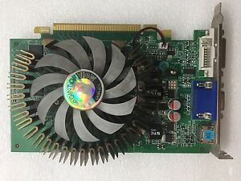
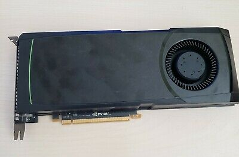
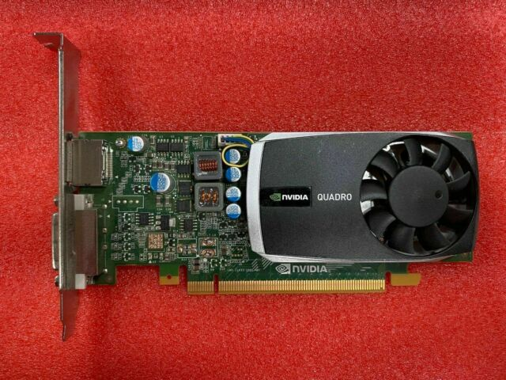
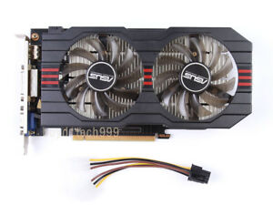
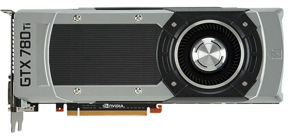
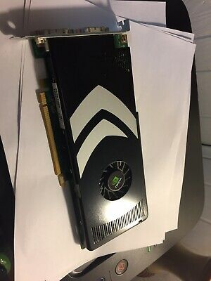
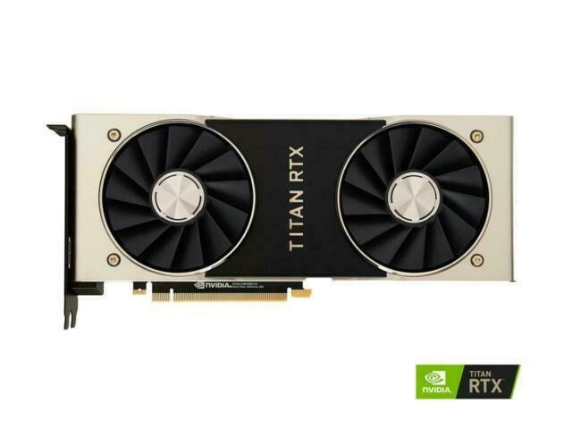

Second Generation of Graphic Cards
(All pictures are from ebay and amazon)
GeForce 200 series and 300 series
Based on the GT200 graphics processor consisting of 1.4 billion transistors, codenamed Tesla, the 200 series was launched on June 16, 2008. The next generation of the GeForce series takes the card-naming scheme in a new direction, by replacing the series number (such as 8800 for 8-series cards) with the GTX or GTS suffix (which used to go at the end of card names, denoting their 'rank' among other similar models), and then adding model-numbers such as 260 and 280 after that. The series features the new GT200 core on a 65nm die. The first products were the GeForce GTX 260 and the more expensive GeForce GTX 280. The GeForce 310 was released on November 27, 2009, which is a rebrand of GeForce 210. The 300 series cards are rebranded DirectX 10.1 compatible GPUs from the 200 series, which were not available for individual purchase.

GeForce 400 series and 500 series
On April 7, 2010, Nvidia released the GeForce GTX 470 and GTX 480, the first cards based on the new Fermi architecture, codenamed GF100; they were the first Nvidia GPUs to utilize 1 GB or more of GDDR5 memory. The GTX 470 and GTX 480 were heavily criticized due to high power use, high temperatures, and very loud noise that were not balanced by the performance offered, even though the GTX 480 was the fastest DirectX 11 card as of its introduction. In November 2010, Nvidia released a new flagship GPU based on an enhanced GF100 architecture (GF110) called the GTX 580. It featured higher performance, less power utilization, heat and noise than the preceding GTX 480. This GPU received much better reviews than the GTX 480. Nvidia later also released the GTX 590, which packs two GF110 GPUs on a single card.
Third Generation of Graphic Cards
GeForce 600 series, 700 series and 800M series
In September 2010, Nvidia announced that the successor to Fermi microarchitecture would be the Kepler microarchitecture, manufactured with the TSMC 28 nm fabrication process. Earlier, Nvidia had been contracted to supply their top-end GK110 cores for use in Oak Ridge National Laboratory's "Titan" supercomputer, leading to a shortage of GK110 cores. After AMD launched their own annual refresh in early 2012, the Radeon HD 7000 series, Nvidia began the release of the GeForce 600 series in March 2012. The GK104 core, originally intended for their mid-range segment of their lineup, became the flagship GTX 680. It introduced significant improvements in performance, heat, and power efficiency compared to the Fermi architecture and closely matched AMD's flagship Radeon HD 7970. It was quickly followed by the dual-GK104 GTX 690 and the GTX 670, which featured only a slightly cut-down GK104 core and was very close in performance to the GTX 680.
With the GTX TITAN, Nvidia also released GPU Boost 2.0, which would allow the GPU clock speed to increase indefinitely until a user-set temperature limit was reached without passing a user-specified maximum fan speed. The final GeForce 600 series release was the GTX 650 Ti BOOST based on the GK106 core, in response to AMD's Radeon HD 7790 release. At the end of May 2013, Nvidia announced the 700 series, which was still based on the Kepler architecture, however it featured a GK110-based card at the top of the lineup. The GTX 780 was a slightly cut-down TITAN that achieved nearly the same performance for two-thirds of the price. It featured the same advanced reference cooler design, but did not have the unlocked double-precision cores and was equipped with 3 GB of memory.
At the same time, Nvidia announced ShadowPlay, a screen capture solution that used an integrated H.264 encoder built into the Kepler architecture that Nvidia had not revealed previously. It could be used to record gameplay without a capture card, and with negligible performance decrease compared to software recording solutions, and was available even on the previous generation GeForce 600 series cards. The software beta for ShadowPlay, however, experienced multiple delays and would not be released until the end of October 2013. A week after the release of the GTX 780, Nvidia announced the GTX 770 to be a rebrand of the GTX 680. It was followed by the GTX 760 shortly after, which was also based on the GK104 core and similar to the GTX 660 Ti. No more 700 series cards were set for release in 2013, although Nvidia announced G-Sync, another feature of the Kepler architecture that Nvidia had left unmentioned, which allowed the GPU to dynamically control the refresh rate of G-Sync-compatible monitors which would release in 2014, to combat tearing and judder. However, in October, AMD released the R9 290X, which came in at $100 less than the GTX 780. In response, Nvidia slashed the price of the GTX 780 by $150 and released the GTX 780 Ti, which featured a full 2880-core GK110 core even more powerful than the GTX TITAN, along with enhancements to the power delivery system which improved overclocking, and managed to pull ahead of AMD's new release.
The GeForce 800M series consists of rebranded 700M series parts based on the Kepler architecture and some lower-end parts based on the newer Maxwell architecture.
GeForce 900 series
In March 2013, Nvidia announced that the successor to Kepler would be the Maxwell microarchitecture. It was released in September 2014. This was the last GeForce series to support analog video output through DVI-I.
